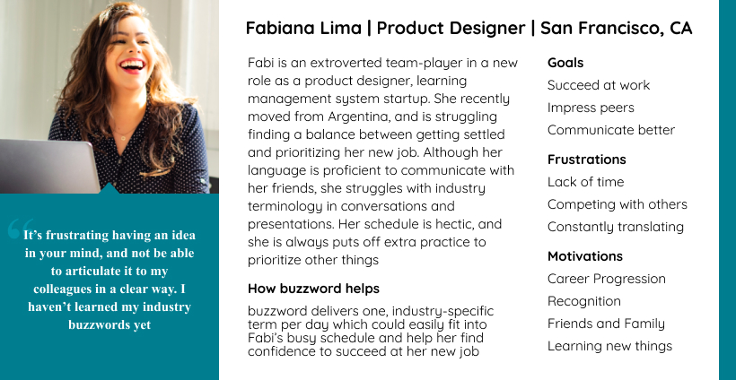

User Research
It can be overwhelming for anyone to acclimate to a workplace. Adding a language barrier makes the process even more strenuous. This app began with the question: How might we help non-native English speakers quickly learn industry terms without getting stressed out
First, we conducted user interviews and disseminated a survey to better understand the user base
Interview Insights
In a series of intimate, 1:1 interviews, we found that non-native English speakers:
1. Feel pressure to be updated on idioms and industry terms
2. Often worry about using incorrect grammar or mispronouncing words
3. Need a quick way to brush up on specific terminology
Survey Insights
Of the 18 participants, we learned:
75% of participants classified themselves as proficient English speakers yet 75% of them expressed insecurities emerging in presentations, networking, and 1:1 conversations
Overall, 53% desired to improve their professional language skills
Persona
Definition & Ideation
Problem Statement
Non-native English speakers do not have a resource to quickly learn technical language
Value Proposition
Given one word a day, buzzword helps non-native English speakers quickly expand their vocabulary to effectively communicate in professional settings
Competitor Analysis
In the realm of language-learning applications, there were a lot of competitors— at first glance. I conducted an in-depth analysis of each company’s offered features to determine their strengths and weaknesses. For each competitor, I stepped through the onboarding process, completed various milestones (when available), and took notes of my overall experience and impressions. Below are some highlights from the analysis:

All lack one essential feature: curriculum customization. Similarly, most of the applications help users learn general vocabulary and phrases, not colloquialisms which are often a source of insecurity for non-native English speakers. buzzword has a leading competitive edge as it has a simple interface that anyone can learn, no expensive or locked content, and covers industry-specific terms that the user can select and update at any time